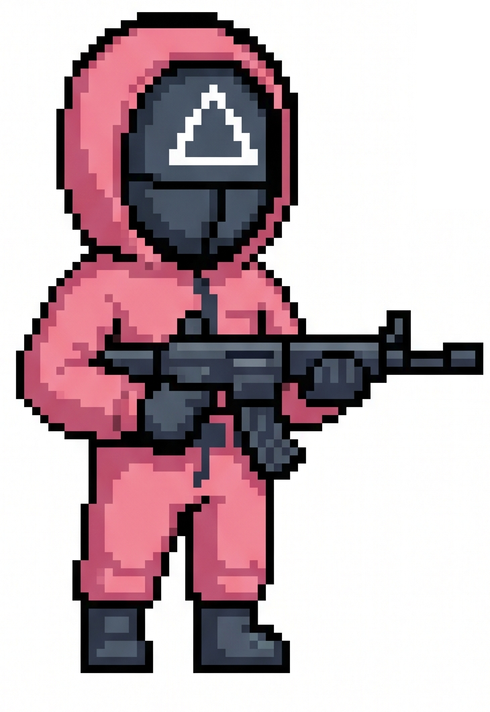

Framing
Push + Pull

Turn
Score
Risk · p(death)
Stimulus
×
If
is
then
otherwise
Optimal
reward
score
Last turn was correct — score change +
.
How sure are you?
0
25
50
75
100
▶
If you continue & get it right
vs
🏁
If you forfeit (locked in)
If you forfeit, why?
CONTINUE ▶
🏁 FORFEIT
. Your score (
)
How to play · step
of 8